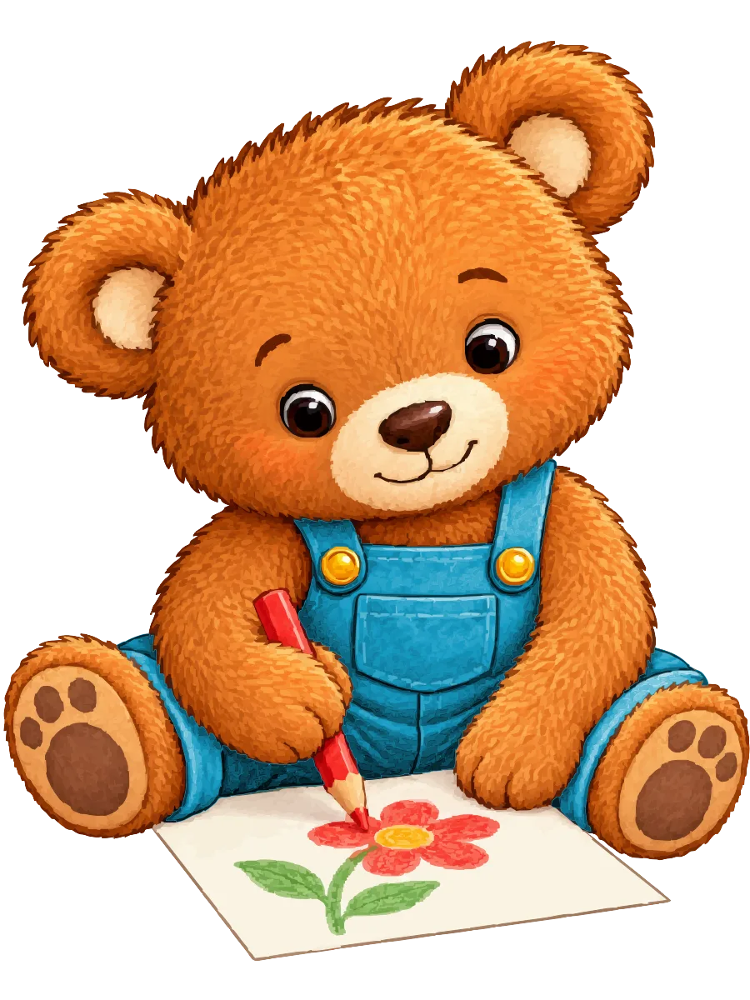
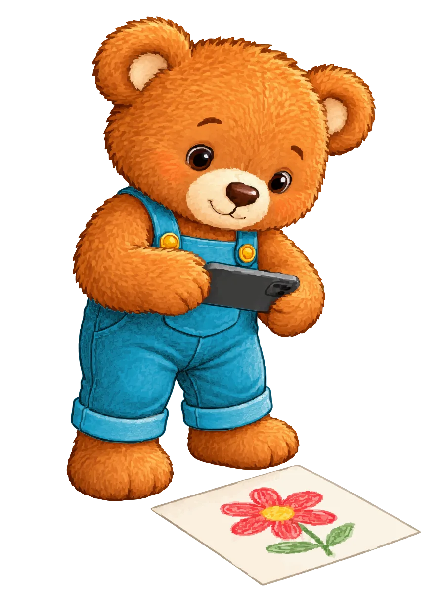

Mitmachen
Dein Bild in der Galerie.
Du hast eine Seite fertig ausgemalt? Dann zeig sie uns. In drei Schritten hängt dein Bild in der Bildergalerie.

Seite fotografieren
Leg die ausgemalte Seite flach hin und mach ein Foto davon.
Von deinen Eltern einsenden lassen
Erwachsene schicken das Foto per E-Mail an uns.
Nach unserer Prüfung in der Galerie entdecken
Wir schauen uns jedes Bild an. Danach hängt es in der Bildergalerie.

Tipps fürs Foto
So wird das Foto richtig gut
- Seite flach hinlegen.Am besten auf den Tisch oder den Fußboden, ohne Knick in der Mitte.
- Den ganzen Bildrahmen und den QR-Code mitfotografieren.Der QR-Code auf der Seite sagt uns, zu welchem Buch und Motiv dein Bild gehört.
- Keine Gesichter und keine Namen aufs Foto.Nur die ausgemalte Seite soll zu sehen sein.
- Gleichmäßig beleuchten.Am Fenster klappt es gut. Stell dich so, dass dein eigener Schatten nicht auf dem Bild liegt.
Für Erwachsene
E-Mail an uns
Schicken Sie das Foto einfach als Anhang. Ein Formular oder ein Benutzerkonto brauchen Sie nicht.
Hinweis für Eltern und Erziehungsberechtigte
Bitte sende das Bild als Elternteil oder erziehungsberechtigte Person und mit Zustimmung deines Kindes ein. Mit dem Einsenden erlaubst du uns, das ausgemalte Bild ohne Namen auf wolkenpark.de zu zeigen und dafür zuzuschneiden. Du kannst die Erlaubnis jederzeit per E-Mail zurückziehen.
- Jede Einsendung wird vor der Veröffentlichung geprüft.Wir behalten uns vor, Bilder nicht zu veröffentlichen.
- In der Galerie erscheinen keine persönlichen Daten.Keine Namen, kein Alter, kein Wohnort – nur das Bild und der Motivtitel.